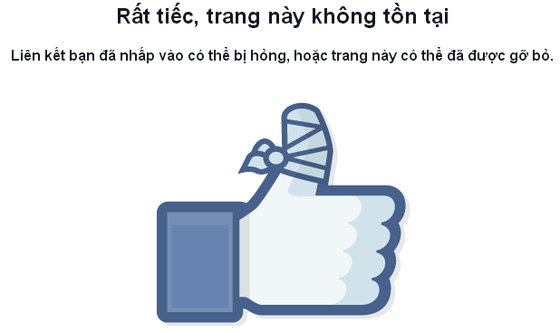

Dame 282 - Hướng dẫn chi tiết
Nội dung chính
Bước 1 : Fake ip US (United States)
Bước 2 : Ở phần clone :
-Cần tầm 3-7 clone, k dùng clone mới lập nhé, face avt+cover, nơi ở và nơi làm việc giống victim, cái link của nó ví dụ https://facebook.com/deptraivippro1 Thì lấy cái deptraivippro1 đặt làm tên trong ngoặc,đặt id các clone lần lượt là:deptraivippro12,deptraivippro123,deptraivippro1234...
- Sau đó add 10 bạn của victim càng nhiều càng tốt nhưng nhớ là add vừa thôi để tránh bị checkpoint nhé ( Nếu victim ẩn bạn bè thì vào các status của victim xuống phần bình luận hoặc cảm xúc và add những người đó nhé )
Ở phần via :
- Lấy ảnh đại diện của victim và gắn vào bìa trang cá nhân (chế độ công khai).
- Fake tiểu sử và thêm tên victim vào biệt danh.
- Upload ảnh đại diện của victim, đặt công khai, và ghim lên đầu trang.
- Dùng Chrome chỉnh thời gian ảnh về ngày 1/1/2009.
Bước 3 : Report theo : Giả mạo người khác - Tôi , Tên giả mạo , Quấy rối - Bắt nạt. spam đến khi tài khoản die 282
Bước 4 : Sau khi báo cáo trang cá nhân xong thì anh em báo cáo ảnh đại diện và ảnh bìa như sau :
Ảnh anime thì báo cáo như sau bạo lực+quấy rối+spam + hạng mục khác+ bạo lực ( spam 5-7 lần)
Ảnh người thật cắn như sau Ảnh khoá thân + chia sẻ hình ảnh riêng tư + quấy rối+ spam + hạng mục khác + chia sẻ hình ảnh riêng tư
Nếu victim là nữ thì báo cáo thứ tự như sau: Dòng 1+1 -> 1+2 -> 1+3 -> 1+4 + Dòng 2+1 -> 2+2 -> 2+3 + Dòng 3+1 -> Dòng 4 -> Dòng 5 -> Dòng 6 + Dòng 7+1 -> 7+2 -> 7+3 -> 7+4 + Dòng 8+1 -> 8+2 -> 8+3 -> 8+4 -> 8+5 -> 8+6
Còn nếu victim là nam thì báo cáo như sau : Dòng 2+1 -> 2+2 -> 2+3 + Dòng 3+1 -> Dòng 4 -> Dòng 5 -> Dòng 6 + Dòng 7+1 -> 7+2 -> 7+3 -> 7+4 + Dòng 8+1 -> 8+2 -> 8+3 -> 8+4 -> 8+5 -> 8+6
